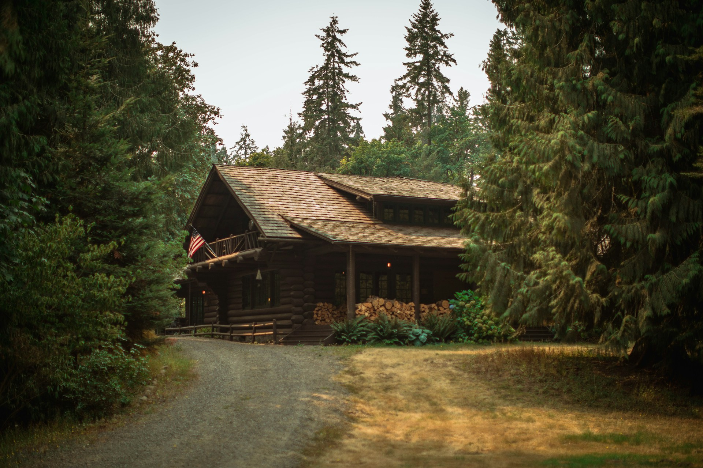

WiFi-Free Cabin Monitoring - The Smart Solution for Property Protection
For cabin owners, winter brings more than just beautiful snowy landscapes – it brings worry. Will the pipes freeze? Is the power still on? Has the temperature dropped too low? Until now, monitoring these crucial factors required expensive WiFi installations or frequent in-person checks. CabinPulse changes everything with a revolutionary approach to cabin monitoring that works anywhere there's cellular coverage.
The End of WiFi Dependencies
Traditional smart home solutions sound great until you realize they all share the same fatal flaw: they require WiFi. For most cabin owners, installing and maintaining reliable internet service at a seasonal property is both expensive and impractical. CabinPulse eliminates this barrier entirely by utilizing advanced LTE-M cellular technology. Simply plug in the device, and you're ready to go – no internet connection required.
Real-Time Protection When It Matters Most
Winter poses the greatest risks to unoccupied cabins, and CabinPulse provides comprehensive monitoring of the most critical factors:
- Temperature Monitoring: Get instant alerts if temperatures drop to dangerous levels that could lead to frozen pipes
- Humidity Tracking: Prevent mold and mildew damage with accurate humidity monitoring
- Power Outage Detection: Know immediately if your cabin loses power, with battery backup ensuring continued monitoring for up to 7 days
- Air Quality Monitoring: Stay informed about air quality issues that could indicate problems like water leaks or unwanted critters
"Before CabinPulse, I was driving out to my cabin every two weeks just to check on things. Now I can see exactly what's happening at any time, right from my phone. The peace of mind is incredible."
Simple Setup, Powerful Results
Getting started with CabinPulse couldn't be easier:
- Plug In: Connect your CabinPulse device to any power outlet
- Activate: Enter the activation code on your dashboard
- Relax: Start receiving updates every 15 minutes and instant alerts for any issues
Made for Canadian Conditions
Designed and manufactured in Saskatoon, Saskatchewan, CabinPulse understands the unique challenges of Canadian cabin ownership. The device is rated to function in temperatures from -20°C to 60°C, ensuring reliable operation even in unheated buildings during shoulder seasons.
Affordable Peace of Mind
For less than the cost of a single pipe repair, CabinPulse provides year-round protection for your cabin. Choose between two flexible plans:
- 1-Year Plan: $14/month with a one-time $99 device fee
- 3-Year Plan: $10/month with a one-time $99 device fee (Save 29%)
Both plans include all monitoring features, alerts, and cellular connectivity with no additional fees or subscriptions required. Plus, with our 30-day risk-free guarantee, you can try CabinPulse without worry.
Beyond Basic Monitoring
CabinPulse isn't just about preventing disasters – it's about giving you complete environmental awareness of your property:
- Custom Alert Thresholds: Set personalized triggers for temperature, humidity, and air quality alerts
- Historical Data: Track trends and patterns in your cabin's environment over time
- Multi-Device Management: Monitor multiple properties from a single dashboard
- Secure Canadian Hosting: All your data is stored securely on Canadian servers
The Smart Choice for Cabin Owners
As we head into winter, now is the perfect time to protect your cabin investment. With our current promotion, save $20 on any purchase until December 10th using code SASK20. Join the growing community of cabin owners who sleep better at night knowing their property is protected by CabinPulse.
Don't wait for a costly disaster to think about cabin monitoring. Take control of your property's safety today with CabinPulse – the intelligent choice for cabin owners who want peace of mind without the hassle of WiFi installation.